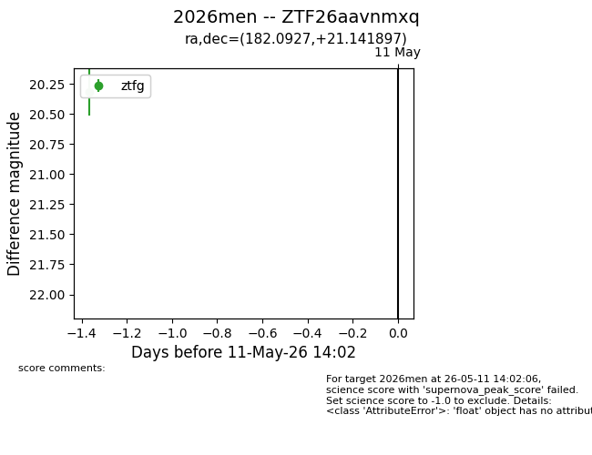
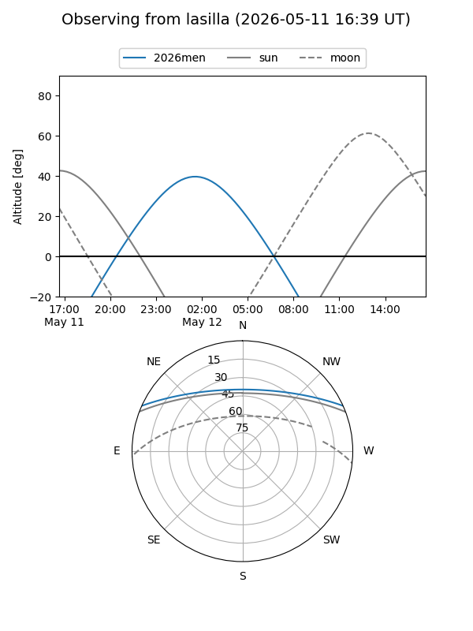
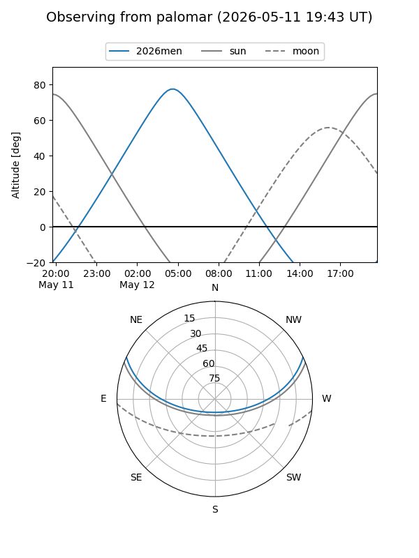
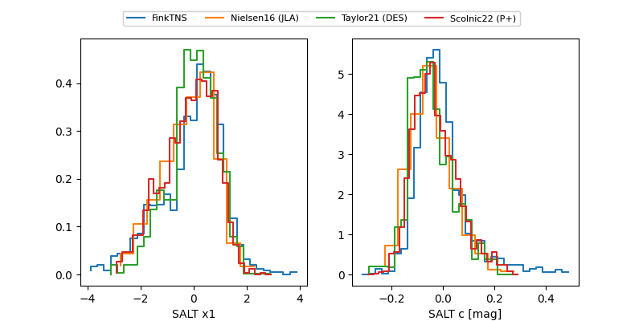

2026men
Target 2026men at 2026-05-11 14:03
Aliases and brokers:
FINK: link
Lasair: link
ALeRCE: link
TNS: link
YSE: link
alt names
ZTF26aavnmxq (ztf,fink_ztf)
2026men (tns,yse)
Coordinates:
equatorial (ra, dec) = 182.0927,+21.14190
equatorial (HMS+DMS) = 12:08:22.25,+21:08:30.83
galactic (l, b) = (241.9881,+78.50262)
Flags:
Photometry:
last ztfg=20.32
1 ztfg detections
Lightcurve

Visibility


Additional plots
